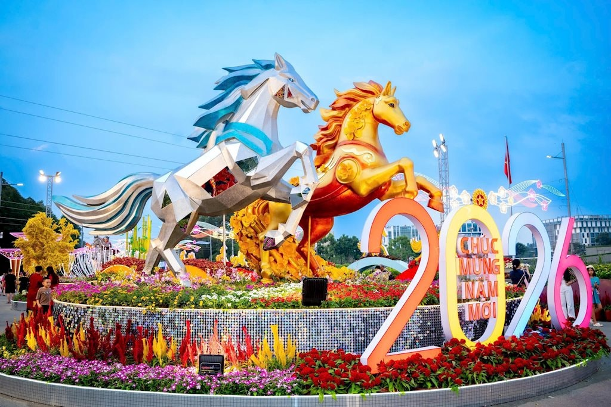
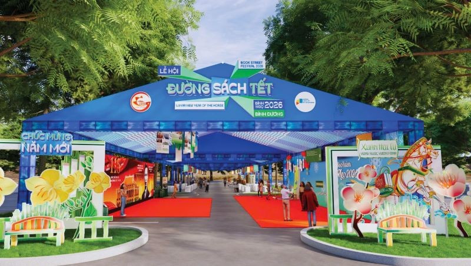
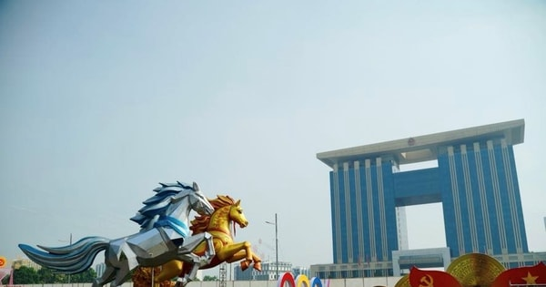
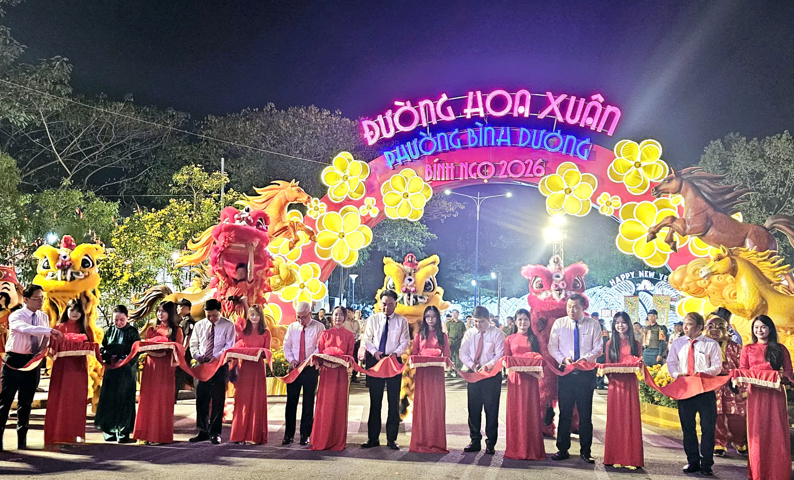

Tết Bình Dương
Bình Dương những ngày xuân về mang một vẻ đẹp rực rỡ, hiện đại nhưng vẫn đậm đà bản sắc truyền thống.
Vị Trí Địa Lý Bình Dương
Bình Dương nằm trong vùng kinh tế trọng điểm phía Nam, với vị trí đắc địa thuận lợi cho giao thương và phát triển kinh tế, văn hóa.

Bản đồ hành chính tỉnh Bình Dương
Không Khí Tết Tại Bình Dương
Mỗi dịp Tết đến xuân về, đường phố Bình Dương được trang hoàng lộng lẫy với cờ hoa, đèn lồng rực rỡ. Các khu chợ hoa xuân nhộn nhịp người mua kẻ bán, tạo nên không khí tưng bừng, náo nhiệt.

Chợ Hoa Xuân

Đường Sách Tri Thức

Lễ Hội Mừng Xuân Tại Tòa Nhà Hành Chính

Toàn cảnh không khí đón Tết